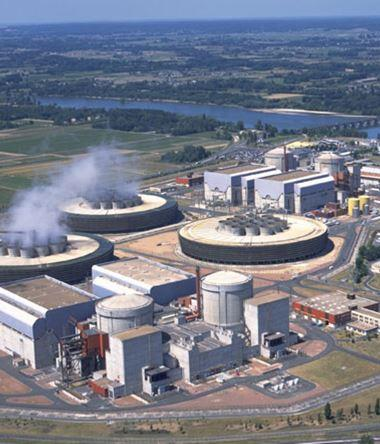
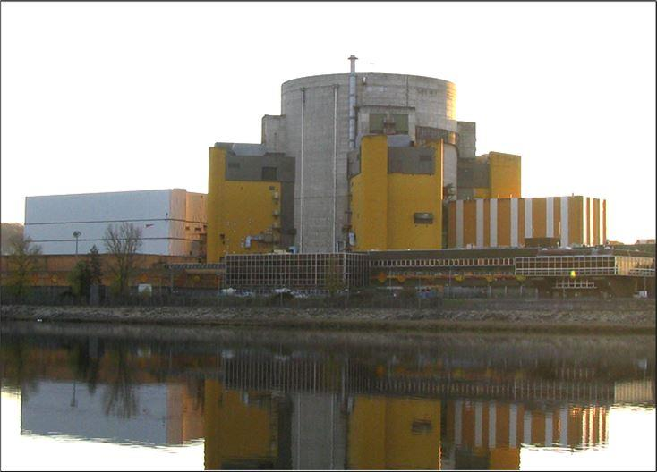
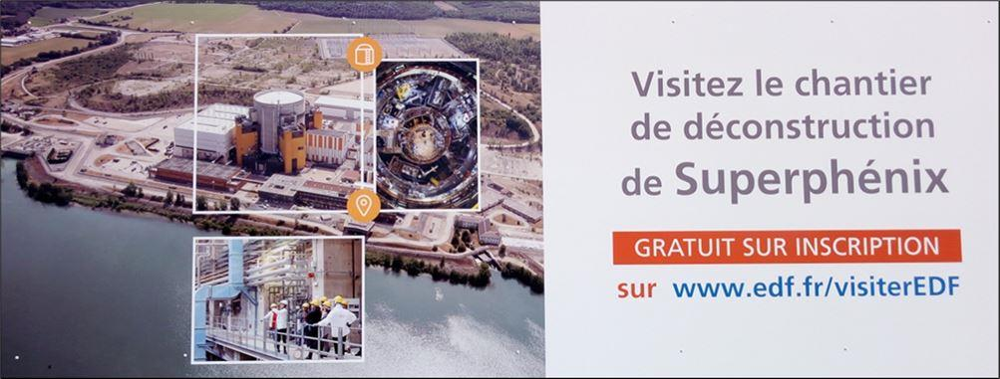
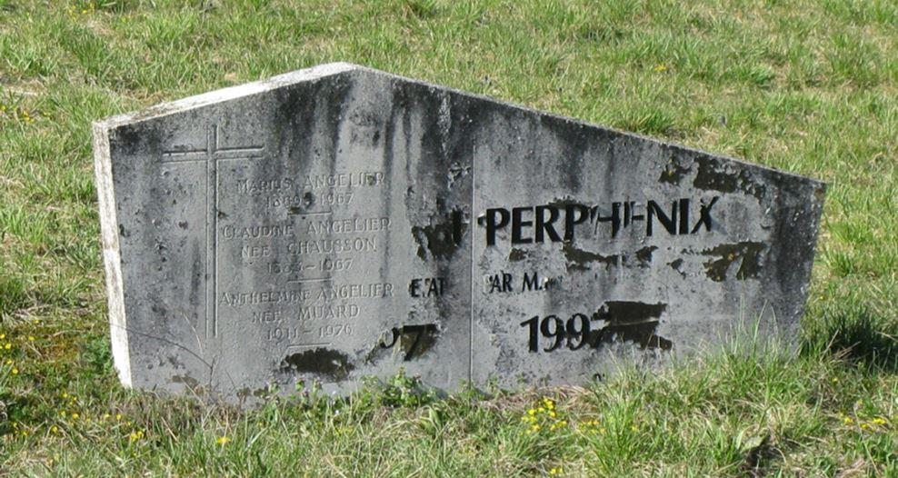
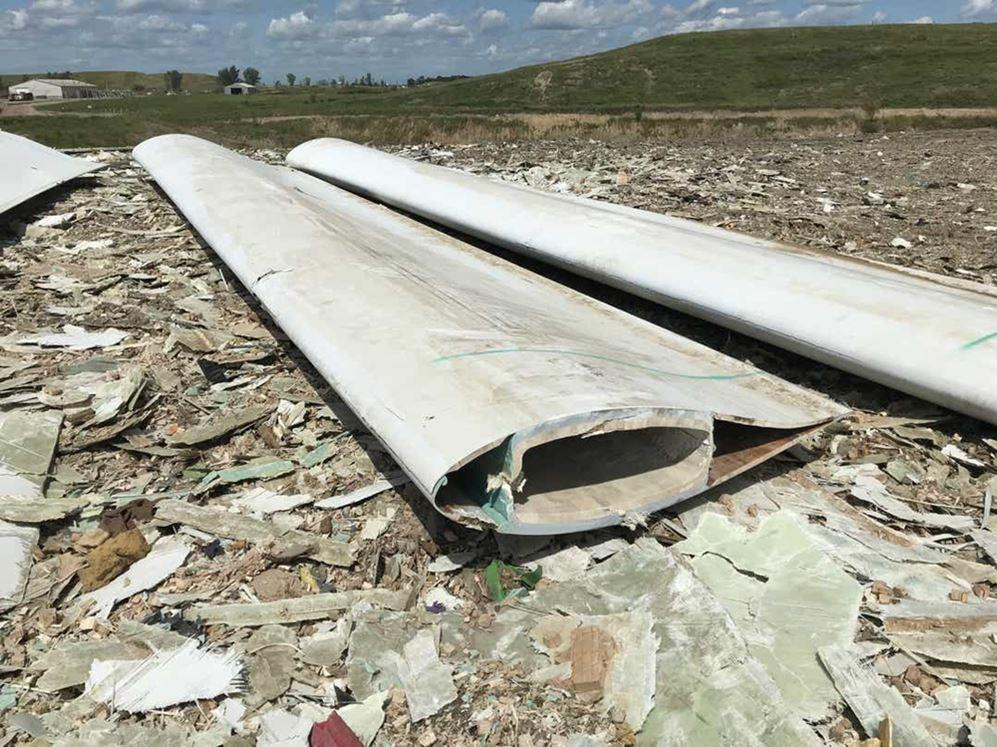
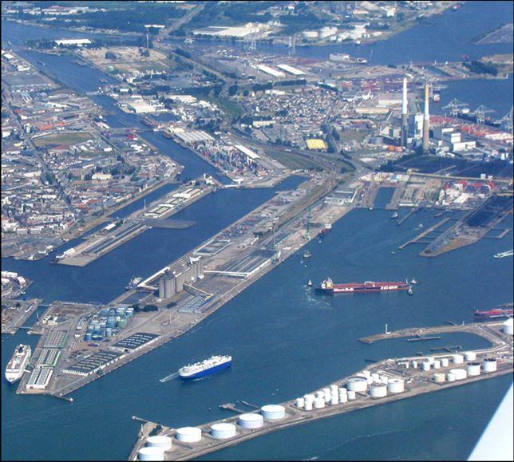
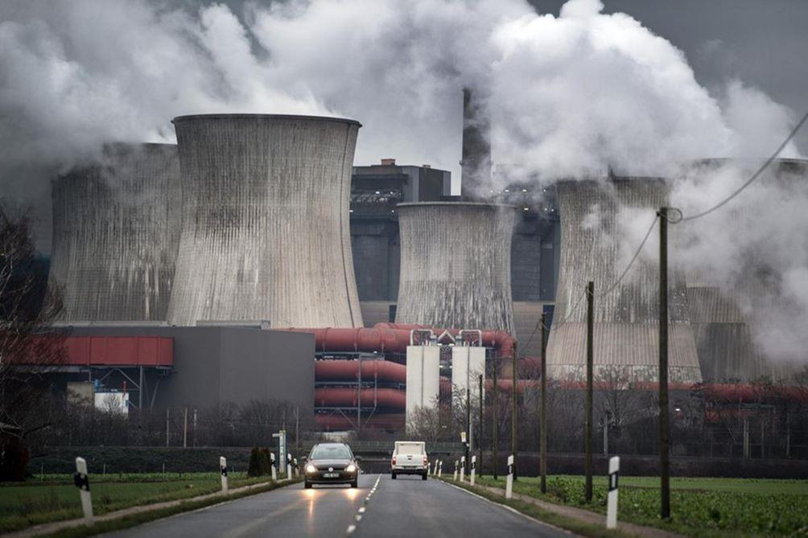
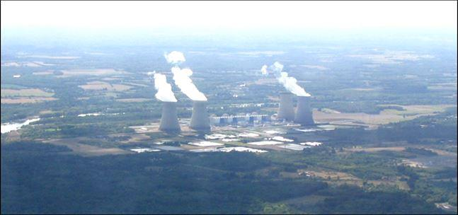
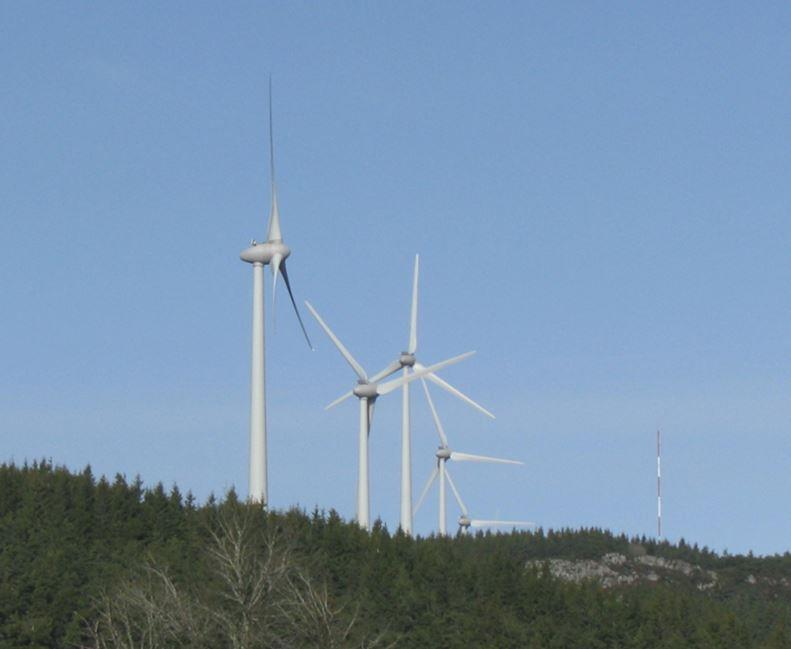
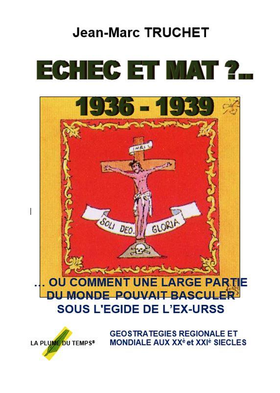

Si l’on en croit les dernières informations provenant de certains membres du gouvernement français, il semblerait que des coupures de distribution électriques soient envisageable dès le mois de février 2021, naturellement sous réserve d’un thermomètre peu compatissant au confort et à la vie des Français en général. Cependant, aucune graduation sur l’échelle de valeur de ce même appareil n’est avancée car l’incertitude ne peut vraisemblablement que demeurer.
Suivant les raisons avancées pour justifier cela, naturellement à condition que l’on ait bien compris car il faut tenir compte du langage utilisé en politique qui n’est souvent pas le même que dans la vie courante de chacun, cette hypothétique situation viendrait de la disponibilité des centrales nucléaires. En effet, l’exploitant EDF, suite aux périodes d’arrêts pour entretien des installations, perturbées par les confinements induits par la pandémie de la COVID 19 et diverses modifications imposées par les Autorité de Sureté Nucléaire (ASN) 1, l’entreprise aurait ménagé l’usure du combustible des unités en exploitation afin d’en maintenir l’activité hivernale.

Centrale nucléaire de Chinon
Si l’on réfléchit un peu, voilà qui est tout de même fort étonnant de la part de l’électricien national dont le souci premier et malgré tout ce qui se raconte, a toujours été d’assurer sans aucun incident notable, une gestion optimale et sécuritaire de ses centrales nucléaires qui depuis plus de 35 années assurent tout de même environ 70 à 75 % de l’énergie électrique produite dans l’Hexagone.
Par conséquent, il n’est pas encore interdit d’envisager autre chose car l’argument semble tout de même un peu léger.
Un peu d’histoire
Sans entrer dans trop de détails, ce qui n’est pas l’objet de cet article, rappelons tout de même ce qui suit en considérant un recul depuis les années 85, soit tout de même trois décennies et demie. L’énergie électrique produite par les centrales françaises se répartie en majorité et sensiblement comme suit depuis cette période :
- 70 à 75 % provenant de l’énergie nucléaire depuis 58 réacteurs de 905/915 MW et 1300 MW bruts (hors consommation des matériels auxiliaires nécessaires à leur fonctionnement, soit 5 à 6%).
- 8 à 15 % de l’hydraulique suivant les années.
- 1 à 5 % des centrales thermiques à combustibles fossiles (quasiment arrêtées depuis 2000).
- A 31 décembre 2019, 9.77 % de l’éolien et du photovoltaïque en légère croissance chaque année par suite de nouvelles installations.
En 2019, la production nationale s’établit à 534 TWh (534 x 106 MWh) dont » 71 % issue de l’énergie nucléaire produite par 58 réacteurs, soit 56 si l’on ôte Fessenheim 1 et 2 définitivement arrêtés respectivement en février et juin 2020, soit 1 740 MW nets.
A l’été 2020, quatre tranches de 905 et 915 MW bruts et une de 1300 W, soit » 4 750 MW nets ont été vérifiées par suite d’interrogations ayant entraîné des expertises sur certains matériels du circuit primaire (générateurs de vapeur). Les constats seront d’ailleurs déclarés aux Autorités de Sûreté Nucléaire (ASN) mais ceci n’interdira pas la remise en fonctionnement ou non de ces unités car en septembre la nécessité ne s’en faisant pas sentir, cela permettait effectivement d’économiser leur combustible nucléaire. En effet, quel que soit le type de centrale, il serait peu judicieux de faire fonctionner des tranches (1) si la nécessité ne l’impose pas.
Pour mémoire, il n’est pas inutile de rappeler que le combustible reste trois années dans le cœur et qu’à chaque arrêt annuel pour entretien qui dure environ trois semaines, un tiers est remplacé, les deux autres tiers étant repositionnés suivant un schéma précis afin d’en optimiser l’irradiation et ainsi l’efficacité énergétique mais aussi et inévitablement, l’usure.
Par conséquent, à quelques tranches près toujours en arrêt pour entretien annuel, en décembre 2020 le parc reste globalement disponible.
La mise à l’arrêt définitif de la centrale EDF de Fessenheim
Les deux tranches de 870 MW nets de la centrale REP de Fessenheim (Bas Rhin) furent couplées au réseau respectivement le 06 avril 1977 et le 07 novembre 1977. En 2020, elles étaient alors âgées de 44 années mais disposaient des autorisations nécessaires pour fonctionner encore quatre années suite aux travaux imposés par les Autorités de Sureté. Cet arrêt définitif s’est donc traduit par la perte de 1740 MW nets sur le réseau (870 MW x 2).
Pour mémoire, il s’agissait d’une promesse de campagne du candidat François Hollande mise en œuvre sous la présidence de son successeur.
Suivant LE JOURNAL DES ACTIVITES SOCIALES DE L’ENERGIE (septembre-Octobre 2020), de cette unité qui concernait 850 agents d’EDF, 344 prestataires de services et environ 500 emplois indirects, en 2024 il ne devrait plus rester que 60 agents d’EDF et une centaine de sous-traitants.
Toujours suivant ce document, côté finance, l’Etat devrait débloquer une indemnité de 4.4 milliards d’Euros ce qui n’est encore une fois que de l’argent public mais à cela s’ajoute une perte à gagner estimée entre 5 et 6 millions d’Euros pour le commerce de proximité et la fermeture de 4 à 6 classes d’écoles, sans évidemment aborder le chiffre d’affaire perdu par EDF au niveau de la production d’énergie.
On retrouve ici sensiblement l’affaire du surgénérateur de Creys Malville, appelé SUPER PHENIX, (département de l’Isère) 2, pour mémoire, centrale prototype neuve de 1200 MW nets définitivement arrêtée en juin 2017 sur décision politique sans fondement. Enfin, pas tout à fait car cela évita que le groupe écolo à l’assemblée nationale dépose une motion de censure ce qui avait de grandes chances de faire tomber le gouvernement socialiste déjà mal en point.

Centrale de Creys Malville, dite SUPER PHENIX, vue côté Rhône.
Photo. J-MT 2020.
Les Français en paieront une facture actualisée voisine de 14.50 milliards si l’on compte l’impact au niveau de la modification du combustible chez AREVA, destiné aux centrales REP (Réacteurs à Eau Pressurisée) actuellement en fonctionnement. Une solution qui s’imposait afin d’utiliser le plutonium en excès issu des centrales UNGG (Uranium Naturel Graphite Gaz) de Marcoule G1 à G3 (CEA), Chinon 1 à 3, Saint Laurent A1 et A2, Bugey 1, unité par nature plutonigène.
À titre documentaire, SUPER PHENIX faisait partie de la filière dite, RNR (Réacteurs Neutrons Rapides) dont l’objectif était d’utiliser le plutonium (239Pu) avec, en théorie, une légère capacité à produire plus d’énergie que celle installée sous forme d’uranium inerte, soit 238U après irradiation dans le cœur. D’où le nom de SUPER PHENIX sachant qu’une centrale prototype gérée par le CEA et EDF (Commissariat à l’Energie Atomique) de 250 MW installée sur le site de Marcoule (département des Bouches du Rhône) avait fonctionné de 1973 à 2010. Réacteur refroidi au sodium, suivant la loi Bataille N° 91-1381 du 30 décembre 1991, il fut également utilisé pour étudier la transmutation de déchets radioactifs à vie longue dont les actinides mineurs 3 en produits à vie plus courte. Cette installation est actuellement en cours de démantèlement.
Par conséquent, si l’on compte bien, SUPER PHENIX plus Fessenheim 1 et 2, cela fait 1200 + 1740 = 3 940 MW en moins sur le réseau, une affaire gratifiée de la perte nationale concernant la technologie des surgénérateurs puisque le projet ASTRID qui devait suivre sera également abandonné en 2010. 4

Venez visiter ce que les politico-écolos nous ont fait faire avec vos impôts…
Cette visite est gratuite… Encore une chance ! Photo. JMT 2019
Comme on ne peut que le constater, en France on arrête une centrale électrique, y compris quasiment neuve comme Creys Malville (Super Phénix), si un gouvernement se sent menacé ou sur une promesse de campagne électorale, pas sur une étude technique et/ou financière irréfutable, personne ne se posant sans doute la question de savoir quelles en sont les conséquences, qui paie de telles décisions et durant combien de temps.
Faut-il que la France soit un pays très riche pour s’offrir de tels luxes mais est-ce bien encore le cas malgré la fabrication de papier monnaie et sans doute bientôt le règne de l’argent virtuel ?.. Les bonnes paroles ne suffiront sans doute pas.

La stèle érigée par certains personnels de la centrale lors de son arrêt définitif par le gouvernement en juin 1997. Elle matérialise aussi l’enterrement ultérieur de la filière. Photo. JMT 2019.
Les énergies renouvelables
En réalité et malgré tout ce qui peut se raconter et s’écrire, là se trouverait manifestement le vrai problème mais silence… On tourne… Sans jeu de mot, évidemment !
Précisément, si l’on veut bien revenir un instant aux très chères éoliennes et autres centrales solaires, produisant une énergie électrique nécessairement écolo, verte, renouvelable, éco-responsable, etc. avec pourtant 15 935 MW (éolien) + 9 083 MW (solaire) = 25 018 MW installés, soit 40 % du parc nucléaire, en 2019 ces deux sources n’ont participé au mix énergétique qu’à hauteur de 9.77 %. (5)
Pour autant, avec une taxe d’environ 25 milliards d’Euros de subvention cumulés depuis 2004 pour ces deux énergies (Contribution au Service Public de l’Electricité, soit 7.50 % prélevés sur les factures d’électricité) qui n’est autre que de l’argent public, ce n’est pas avec cela que l’on va compenser la production de Fessenheim et de Creys Malville, sans compter l’augmentation régulière du coût du kW/h payé par le consommateur qu’il ne faudrait évidemment pas oublier !
PETIT CALCUL PAS COMPLIQUÉ
À titre documentaire, combien faut-il d’éoliennes de 2.50 MW (2,5 x 106 W) qui sont les plus puissantes en service à ce jour pour compenser l’arrêt de la centrale de Fessenheim ?
En 2019, le coefficient K entre la puissance installée et la production annuelle de ce type de machine est de 4.76 (5.31 pour les panneaux photovoltaïques).
La production annuelle d’une éolienne de 2 500 kW (2.5 x 106 W) est alors de :
2,5 x 106 (W) : 4.76 (K) x 8 760 (h, soit une année) = 4.6 millions de Wh (4.6 x 106 Wh).
Pour compenser Fessenheim dont la production annuelle moyenne sur les dernières années était de 11.2 GW/h (11.2 x 109 W/h), cela conduit à 2434 éoliennes, soit » 2 500 si l’on tient compte de celles en incident ou en entretien ce qui représente environ 30 % du parc installé fin 2019… Rien que cela !
EN CONCLUSION
Il ne faut pas être grand clerc pour comprendre que la difficulté d’approvisionnement en énergie électrique de la France, dans la mesure où elle se présenterait en 2021, ne peut pas être imputable aux centrales nucléaires mais bien aux énergies renouvelables, écolos, vertes, éco-responsables et autres élogieux arguments mais toujours renouvelables à souhait. Comment alimenter un pays comme la France avec des sources aléatoires, peu productrices et accessoirement fort onéreuses ?
Quant on pense que certains politico-écolos ayant prématurément fait arrêter SUPER PHENIX et FESSENHIEM 1 et 2 voudraient également que le pays sorte au plus vite du nucléaire, on a quelque peine à imaginer ce qui se passerait, surtout lorsque l’on voit déjà le résultat obtenu par le parc éolien et photovoltaïque, lequel n’a strictement rien d’écolo !
Pour 40 % du parc nucléaire installé, ne produire que 9.77 % du mix énergétique relève clairement de l’illusion, sinon de l’escroquerie.
En effet, la puissance nette des centrales REP est actuellement de 61 260 MW. Par conséquent, 40 % de plus représenteraient 24 504 MW. Il n’y aurait alors aucun souci à se faire pour l’approvisionnement du pays. Ceci d’autant qu’avec les 25 milliards déjà engloutis depuis 2004 dans les programmes éolien et photovoltaïque, EDF aurait pu construire plusieurs réacteurs ce qui aurait eu, en particulier comme avantages :
- De conserver la maîtrise de construction dont l’EPR aurait bénéficié plutôt que d’accumuler retards sur retards et un très important dépassement de budget.
- De conserver la maîtrise des réacteurs RNR (Réacteurs à Neutrons Rapides (SUPER PHENIX) et non de tout abandonner comme c’est aujourd’hui le cas alors que le pays était en pointe dans le monde avec ce type de réacteur.
- D’envisager sereinement le remplacement des unités REP les plus anciennes.
- De conserver un prix du kWh très attractif comme c’était le cas avant et donc des facilités d’exportation, source de rentrées de devises.
- In fine, de participer activement au maintien des compétences et de l’activité industrielle de la France et ainsi de l’emploi.
On peut donc désormais en mesurer le gouffre creusé par des décisions que l’on ose qualifier de parfaitement irresponsables !
Continuons dans l’absurdité
Ce serait évidemment dommage de s’arrêter en si bon chemin… Quoi qu’il en soit, la France persévère avec désormais de gigantesques éoliennes en mer. Cependant, personne ne sait ce que l’on fera de ces matériels après usage, soit à échéance de 20 à 25 années alors qu’une tranche nucléaire est étudiée pour fonctionner 60 années…
De toute manière, on ne devrait pas trop tarder à le savoir car certaines machines commencent à accuser les heures de fonctionnement. En particulier, dans le même chapitre, on aimerait déjà connaître le devenir des pales en matériau composite pour celles ayant subi des incidents, soit plusieurs dizaines de tonnes.
Va-t-on les enterrer, comme aux USA ou peut-être les brûler dans des chaudières de centrales thermiques ou autres, les broyer mais pour quel usage ? Qui dit mieux ?
Alors, pour résoudre l’équation qui se pose en cette fin d’année 2020, où pourrait donc se trouver la solution, s’il en existe une ?
Comme il est exposé ci-dessous, ce n’est pourtant pas difficile. Il suffit de réfléchir un peu et la lumière arrive vite, naturellement, toujours sans jeu de mots… mais comment résister car la langue française est tellement riche en possibilités !

Site de Sioux Falls dans le Dakota du Sud. Via Joe Steve (Submitted photo via Internet)
L’observation montre immédiatement une grande utilisation de bois pour la confection de ces pales dont particulièrement de balsa, bois très léger largement utilisé dès les origines de l’aéronautique.
Il est issu des forêts tropicales mais également de plantations. On trouve également du bouleau, provenant largement des forêts canadiennes. Quant aux systèmes polymères (polyesters ou époxy) et sans aborder les mousses synthétiques, ils résultent de la chimie du pétrole ou du charbon. Alors… Après usage, on enterre ces pales, on les immerge en mer ou l’on en fait "un grand feu de joie" dans des chaudières... Et cela durant combien de temps ?.. Vraiment écolo l’éolien ?
Le redémarrage de centrales a charbon
Les difficultés éventuelles d’approvisionnement en énergie électrique sont-elles une surprise ? La réponse est non ! En effet, si l’on en juge par la pression politico-écolo qui s’accentue depuis plus de 30 années, il était prévisible que la France en arrive là où désormais elle en est sachant que la descente aux enfers n’est certainement pas terminée pour elle et ses habitants. D’ailleurs, dès 2018 EDF manifestement très encadrée par ces pressions, laissait déjà entendre ce qui était susceptible de se produire, or, il semble que nous y arrivions…
Alors, que faire pour résoudre cette équation écologique à plusieurs inconnues ?
Ce n’est pas compliqué du tout. En cet automne 2020 et a fortiori pour l’hiver, il suffit d’une part de remettre en service les deux tranches EDF à charbon de Cordemais (Loire Atlantique) et celle du Havre (Baie de Seine) ce qui fera potentiellement 1 800 MW bien venus. Si cela ne suffit pas, il reste l’unité privée de Gardanne, soit 600 MW toujours à charbon. Ensuite, l’on pourra toujours importer depuis nos voisins allemands, par exemple mais évidemment pas au même coût que chez nous, soit au prix du marché qui varie aisément jusqu’à 3 ou 4 fois celui du kWh nucléaire français suivant le moment.

Centrale à charbon de Le Havre en baie de Seine et une partie de son port pétrolier avec à droite de la photographie, la centrale thermique EDF. La tranche de 600 MW à charbon se situe au niveau de la cheminée de 240 m de hauteur (peinture blanche plus nette) et du bâtiment plus haut abritant la chaudière. Devant, ce sont les deux tranches de 250 MW, hors service. On aperçoit le parc à charbon devant l’installation. Photo. J-MT 2014 - Altitude d’origine 3600 fts (1200 m).
Tout naturellement, on en déduit que vraisemblablement au titre de la transition énergétique, il est important d’arrêter des centrales nucléaires en parfait état de fonctionnement, lesquelles pour mémoire ne produisent pas de CO2, pour remettre en service des tranches à charbon âgée d’environ 50 années, pourtant si vilipendées dont l’arrêt définitif devait être prononcé en 2020. Quel progrès !
L’avenir ?
Comme par hasard et ainsi que le souligne LE JOURNAL DES ACTIVITES SOCIALES DE L’ENERGIE, nos voisins d’outre Rhin ont couplé au réseau le 30 mai 2020 la centrale à charbon de Datteln 4 située dans l’Ouest du pays, autrement dit, rive droite du Rhin. Affichant une puissance de 1100 MW pour une capacité de production estimée de 1.1 GW/h/an, 1.50 milliards d’Euros ont été consacrés à ce projet malgré la promesse du gouvernement d’abandonner d’ici 2038 la filière électrique utilisant ce combustible.
Cependant, en 2019 ce dernier fournissait encore 29 % de l’électricité en Allemagne.
Avec l’appoint de nos trois tranches EDF bien françaises dont l’arrêt serait désormais reculé vers 2024 sinon plus loin, cela devrait boucher juste le trou et si ce n’est pas le cas, ce qui est envisagé, eh bien, on peut penser qu’il suffira de faire appel au civisme des Français, autrement dit, de gérer les coupures de courant.
De toute manière, cela ne devrait pas poser de difficulté puisque l’expérience montre qu’avec la pandémie liée au COVID 19, ils sont déjà globalement bien préparés et pour le moment assez obéissants. Il suffira de leur expliquer qu’il s’agit de problèmes venant du nucléaire, encore lui !...
Sans naturellement oublier les circonstances exceptionnelles ou autre obscure raison par nature toujours inattendues comme difficilement gérables.
Quant à l’état de la France, on verra à ce moment-là…
Merci à nos très chers politico-écolos, soit pour se faire oublier, soit pour trouver les arguments verts, éco-responsables et assurément renouvelables pour justifier une telle politique et ses dramatiques conséquences pour la France !
Quoi qu’il en soit mais c’est très vraisemblablement un hasard, dès 2021 le groupe TOTAL devrait mettre en service à Landivisiau (Bretagne), via sa filiale DIRECT ENERGIE, une centrale à gaz à cycle combiné (électricité et chaleur) de 446 MW mais c’est la société allemande SIEMENS qui la construira et qui l’entretiendra, sans doute à partir de gaz bio pour produire de l’électricité verte comme dans les publicités de cette société.
Ceci précisé, encore convient-il de définir ce qu’est de l’électricité verte. D’ailleurs, on cherche toujours ou se trouve la boite qui sépare ce type d’électricité de celle qui serait moins verte, sinon pas du tout alors que les réseaux sont interconnectés… Pour l’heure, cela reste un mystère ! En attendant, ce gaspillage politico-financier tous azimuts a un coût que l’on pourrait grossièrement résumer comme suit :
- SUPER PHENIX : » 14.50 milliards
- Eoliennes et panneaux solaires : » 25 milliards (CSPE)
- Portiques écotaxe : » 1.50 milliards
- Contrat rompu des deux bateaux MISTRAL : 1.50 milliards
- Arrêt de Fessenheim : 4.40 milliards
TOTAL PROVISOIRE : » 46.90 milliards
À cela s’ajoute :
- Le retard difficilement compréhensible de l’EPR (Flamanville)
- L’abandon du canal Rhin-Rhône (même cause que SUPER PHENIX) ce qui vaut toujours des dizaines de milliers de poids lourds sur l’autoroute du Sud (A7) pour n’aborder que cela.
- Le coût indirect de l’arrêt de Fessenheim 1 et 2 pour EDF et le contribuable.
- Le coût indirect de la poursuite du programme éolien et photovoltaïque.
- Les divers conflits armés dans le monde dans lesquels la France est engagée et où elle n’a rien à y faire.
- Les sanctions idem contre la Russie qui ont fait perdre de nombreux et importants contrats, ce qui continue.
- Liste non limitative.
Du côté de chez Wolfgang Von Goethe…
Comme on le constate, sous la poussée écologiste nos amis allemands ont déjà beaucoup réduit leur programme nucléaire, projetant un arrêt complet dans les années qui viennent mais ils possèdent d’excellentes centrales au charbon et au lignite.
Cependant, si l’on veut bien toujours considérer l’Allemagne comme modèle concernant la transition énergétique, au risque de contrarier certains penseurs, ce pays risque fort à terme de se retrouver dans une impasse pourtant parfaitement prévisible mais dont les instances politico-écolos locales n’ont assurément pas la solution pour résoudre l’équation.
En 2019, la production nette d’électricité du pays s’établissait comme suit pour les principales sources 6 :
- Lignite 19.70 %
- Charbon 9.4 %
- Fuel 0.8 %
- Gaz naturel 10.5 %
- Nucléaire 13.8 % Eolien 24.6 %
- Photovoltaïque 9.0 %
- Biomasse 8.6 %
- Hydraulique 3.8 %
- Géothermie 0.2 %
On constate immédiatement que les trois premiers combustibles représentent encore 29.9 % de la production mais l’éolien plus le photovoltaïque 33.60 %, soit un tiers de la consommation d’électricité. Les écologistes souhaitant arrêter le nucléaire comme les centrales à flamme, sans aborder celles à gaz naturel qui, pour le moment, jouit d’une attention particulière, cela représente tout de même 29.9 + 13.8 = 43.70 %, soit pas loin de la moitié du total annuel.

Centrale au lignite située à Niederaussem, dans l'ouest de l'Allemagne, le 16 janvier 2019. Federico Gambarini - dpa
Compte tenu de la durée de vie des éoliennes et dans une certaine mesure des panneaux solaires auxquels s’ajoute leur perte de puissance par vieillissement des cellules 7 on ne voit pas très bien comment compenser une telle réduction de production, d’autant plus qu’il s’agit de sources aléatoires.
Par conséquent, la conclusion s’énonce d’elle-même, à savoir :
- Conserver des centrales nucléaires honnies, voire en construire ce qui est impensable !
- Conserver des centrales à charbon et/ou à lignite pas mieux appréciées.
- Augmenter la part du gaz naturel dans d’importantes proportions mais sans que cela soit pourtant la panacée, tant au point de vue du CO2 que de la dépendance à autrui pour l’approvisionnement.
Un peu de géopolitique et de géostratégie
Toutefois, justement l’approvisionnement en gaz naturel, se pose une importante difficulté, cette fois d’ordre géopolitique et géostratégique dans laquelle on retrouve les tensions entre les USA et la Russie qui, évidemment, ne doivent rien au hasard !..
D’un côté, la Russie propose un gaz naturel très abondant dans le pays, relativement aisé à extraire si l’on fait abstraction des conditions climatiques dans le grand Nord, peu onéreux à l’achat mais qui nécessite pour alimenter l’Europe dont l’Allemagne, la construction d’un gazoduc appelé NORTH STREAM 2, objet de toutes les attentions dont les plus inavouables de la part des USA.
De l’autre côté, l’Amérique et son gaz de schiste qui entend l’imposer à l’Allemagne comme à la France qui est déjà priée d’en importer mais aussi comme d’autres pays. Bien entendu, on peut comprendre pourquoi car les compagnies exploitant les schistes étant déjà en faillite financière, l’exportation est vitale pour elles mais également pour les USA dont les réserves tant de brut que de gaz s’épuisent.
A ce propos, personne n’oserait un instant imaginer que les nombreux conflits que l’Amérique entretient dans le monde sous différents prétextes que sont les incontournables droits de l’Homme, la démocratie et autres arguments humanistes, auraient en réalité une forte odeur de pétrole et de gaz… L’Irak, la Syrie, la Lybie, le Venezuela, l’Iran, etc. en constituent quelques bons exemples.
Quoi qu’il en soit, pour revenir au sujet, l’argument principal avancé serait la dépendance de l’Europe à la Russie, pays comme l’on sait très méchant et ennemi des USA, risquant à tout moment d’envahir ses voisins avec ses chars et autres engins. D’ailleurs, ne parle-t-on pas sans cesse de l’agression russe ce qui montre bien les inavouables intentions de ce pays ?..
Naturellement, la dépendance pouvant se poser vis-à-vis des USA n’est jamais abordée…
Se pose alors une équation pas facile à résoudre pour l’Allemagne dont l’intérêt financier est évidemment d’importer du gaz de Russie et non d’outre atlantique ceci d’autant que celui-ci est extrait dans des conditions qui ne vont pas dans le sens d’une moindre production de CO2 comme en ce qui concerne les gros dégâts portés à l’environnement.
Là encore, il convient de poursuivre l’analyse de la situation et non pas de se contenter du superficiel car il est évident que les quantités en jeu sont très importantes et que les USA n’ignorent pas la situation dans laquelle le pays de Johann Wolfgang von Goethe se dirige en matière d’énergie mais également celui de Buffalo Bill, pour le moins pas brillant.
Comme quoi, l’écologie-business peut mener à tout dès l’instant où l’on réfléchit un peu…
Chez les Gaulois
Dans une bien moindre mesure, tant qu’elle conservera un parc nucléaire important, la France restera globalement en dehors d’un tel schéma mais ce n’est pas gagné car en matière de politique, rien n’est jamais assuré suivant les intérêts électoraux et autres du moment. Le surgénérateur de Creys Malville, l’arrêt du projet de canal Rhin-Rhône, la centrale REP de Fessenheim, les projets d’arrêt de 14 tranches du CP1 entre 2029 et 2035, le redémarrage de trois unités au charbon et la construction d’une centrale privée à gaz en Bretagne devraient déjà interpeler puis conduire à rester éveillé.
Dans la mesure où la France put bénéficier durant plusieurs décennies d’un KW/h des moins onéreux en Europe grâce à ses centrales nucléaires et dans une moindre mesure à son très grand programme d’hydroélectricité commencé avant la seconde guerre mondiale, il serait sans doute bon qu’elle sache réagir à cette forme de transition énergétique.
En l’état et à bien des égards, elle apparaît d’abord comme un très astucieux business sur le dos du contribuable incluant nécessairement un caractère perpétuel.
En effet, si l’on réfléchit un peu, on s’aperçoit vite qu’il s’agit d’un simple déplacement des reproches adressés au système énergétique ayant jusqu’ici prévalu car ces nouvelles sources de production d’énergie électrique sont également affectées d’autres défauts ce qui ne résout rien, parfois même bien au contraire.
En particulier, les déchets, une durée de vie limitée qui implique leur remplacement à terme, le coût d’entretien, une faible production comme aléatoire, de la dépendance vis-à-vis de l’étranger, de l’incontournable circuit pétrolier et non sans de sérieux reproches concernant l’environnement.

Centrale nucléaire de Dampierre en Burly (département du Loiret)
. Quatre tranches REP de 905 MW. Hauteur des réfrigérants atmosphériques : 165 m. Les surfaces blanches au sol, correspondent à des serres pour la culture de fleurs et de légumes par circulation dans le sol d’une partie de l’eau réchauffée venant des condenseurs des turbines à vapeur - Photo JMT 2019.
Sans oublier qu’il faudra les remplacer au fur et à mesure de leur vieillissement sans oublier non plus que leur durée de vie opérationnelle est de l’ordre de 20 à 25 années !.. Pour mémoire, la statistique montre aussi sans ambiguïté possible que la production annuelle d’énergie électrique du parc éolien déjà installé, pour ne parler que de lui, affiche tout de même une performance inférieure d’un facteur égal à 4.77 par rapport à la même puissance représentée par des unités nucléaires REP !.. A méditer…
Même en contestant ces chiffres qui sont néanmoins à ce jour parfaitement recevables car issus de statistiques officielles (EDF et RTE), cela ne peut qu’interpeler, même les plus ²intégristes écolos…²
D’une part, nous n’en sommes pas à remplacer seulement 50 % du parc nucléaire, ensuite, où va-ton installer ces nouveaux moulins à vent, éliminer les déchets de ceux à remplacer au fur et à mesure de leur vieillissement, tout cela pour quelle production d’énergie électrique et à quel coût ?
Une fois de plus, qui paie, combien et pendant quelle durée ?
À travers ce simple exemple ici développé, constitué par l’un des aspects de cette affaire de transition énergétique, manifestement très écolo-business, faut-il encore s’étonner de l’état de la France aujourd’hui ? Un pays qui affichait en 1980 un PIB issu de l’industrie d’environ 32 % pour seulement 11 % fin 2019, soit une vertigineuse perte de 0.52 % par année qui ne va pas s’arrêter en si bon chemin.
Sans être pessimiste, sur ces bases et suivant l’analyse de la situation actuelle, on peut néanmoins estimer que le pays reculera vers la 10ème place mondiale dans quelques années, sinon plus loin, sans espoir de remonter la pente et avec toutes les conséquences prévisibles dont évidemment sociales qui seront nécessairement de plus en plus dures à vivre pour beaucoup.
La réduction de la consommation annuelle et nationale d’énergie électrique déjà constatée depuis deux années, indéniablement en partie consécutive à la dégradation de la situation économique du pays, n’est-elle pas déjà une prémisse permettant d’envisager l’arrêt prématuré puis le démantèlement de centrales nucléaires ou simplement de le justifier ?
Quel avenir pour l’énergie électro-nucléaire en France ?
Sauf à faire preuve de la plus grande naïveté ou d’un esprit quelque peu fermé, si ce n’est intéressé par le développement du parc éolien et autres systèmes éco-responsables, verts renouvelables, etc., il est néanmoins évident que construire autant de machines à vent et remplacer au fur et à mesure de leur vieillissement celles qui existent déjà, interpelle tout de même.
Ceci d’autant et pour mémoire, que ces engins n’ont strictement rien d’écolo et sont même générateurs de gaz à effet de serre, tant pour leur construction que pour leur démantèlement puis leur supposée élimination, si ce n’est durant leur vie car leur fonctionnement aléatoire s’accompagne nécessairement d’une compensation par quelque chose d’autre.
Le redémarrage de trois tranches à charbon en constitue un bon exemple !
Or, très étonnement, le gouvernement français vient d’autoriser EDF à étudier la possibilité de construire six tranches EPR dont la puissance unitaire nette est de 1450 MW. Pour cela, 25 milliards d’Euros seraient mis sur la table, soit à peu de chose près la même somme issue de la CSPE depuis sa création en 2004.
Ceci montre que les éoliennes et autres panneaux solaires ne sont donc pas à l’échelle d’un pays comme la France pour apporter en toute sécurité l’énergie électrique continue nécessaire et réellement non carbonée durant leur fonctionnement.
Quant à la phase de construction, le kg de CO2 par MW et surtout par MWh de production d’énergie électrique, pour ne retenir que ce gaz, est incomparablement en faveur de la centrale nucléaire de grande puissance. Inutile d’effectuer de savants calculs pour le comprendre.
Alors que le progrès en ce début de XXIè siècle, tel qu’on est en droit de le concevoir, devrait permettre d’assurer d’une manière pérenne la production d’électricité dans un pays comme la France, dès lors comment sérieusement justifier d’éventuelles coupures de courant en 2021, voire éventuellement après ?..
En effet, si coupures il doit y avoir en 2021, pourquoi la raison d’origine serait-elle uniquement imputable au parc nucléaire alors que celui-ci assure sans défaillir depuis environ 40 années l’alimentation du pays mais aussi une excellente capacité d’export vers ses voisins ?
Il n’y a encore pas si longtemps, champion mondial en matière d’énergie nucléaire civile destinée à la production d’électricité, comment également justifier que le pays en soit désormais arrivé là ?
Une fois de plus et malgré tout ce qui peut se dire et s’écrire, en ce domaine comme d’ailleurs pour d’autres, l’écologie n’est pas nécessairement là où elle est communément décrite. Il serait temps de sérieusement y réfléchir sous peine et en l’état, de largement participer à la ruine assurée du pays…
Quoi qu’il en soit, force est de constater que le redémarrage de trois tranches à charbon qui devaient être définitivement arrêtées en 2020, à savoir 1710 MW nets (1 800 MW bruts) correspond à quelques électrons près à la disparation définitive du réseau de Fessenheim 1 et 2, soit 1740 MW nets (1 820 MW bruts) mais ce ne peut être qu’un hasard…
Quant aux 25 milliards qui seraient consacrés pour six EPR, c’est également là une somme similaire à la part de la CSPE attribuée depuis 2004 aux éoliennes et aux panneaux solaires.
J-M. T.
NOTES ET RÉFÉRENCES
1. Une centrale électrique, quel que soit le type, est généralement composée de plusieurs ensembles comportant un générateur de vapeur d’eau (chaudière à combustible fossile, réacteur nucléaire…) qui alimente un groupe turboalternateur dont l’énergie électrique produite débite sur un transformateur haute tension raccordé au réseau général. En France, cet ensemble est appelé : tranche. Il existe néanmoins des centrales qui ne comporte qu’une seule tranche.
2. La centrale de Creys Malville, située dans le département de l’Isère, ne comportait qu’une seule tranche. Le réacteur était du type RNR, soit Réacteur à Neutrons Rapides, refroidi au sodium. Les réacteurs actuellement en service en France sont du type REP (Réacteurs à Eau Pressurisée), également dits : à neutrons lents. Ces deux filières sont totalement différentes.
3. Les actinides mineurs sont identifiés dans le tableau des éléments périodique entre les N°s 89 et 103, soit 15 corps chimiques. Produits en petites quantités lors du fonctionnement des réacteurs REP, leur radioactivité est très forte et leur période très longue, soit en millions d’années ce qui justifiait les études entreprises avec les réacteurs RNR pour les transmuter. Ils sont désormais enfermés dans des enveloppes vitrifiées.
4. Projet ASTRID, soit : Advanced Sodium Technological Reactor for Industrial, était une évolution de la technologie RNR, toujours avec refroidissement au sodium pour une 4è génération sous forme de centrales 100 % françaises d’environ 600 MW. Ces installations auraient permis d’utiliser les très importants stocks de 238U et ainsi de disposer d’une énergie abondante. ASTRID est dit de 4è génération car SUPER PHENIX fut précédé de RAPSODIE, un réacteur de 40 MW qui fonctionna sur le site de Cadarache de 1967 à 1978 puis de PHENIX.
5. De Jean-Marc TRUCHET :
ENERGIES RENOUVELABLES… VRAI PROGRES OU AUTRE CHOSE ?.. Eolien-Photovoltaïque.
A paraître début 2021 : LA PRODUCTION D’ENERGIE ELECTRIQUE - CENTRALES CLASSIQUES A COMBUSTIBLES FOSSILES - NUCLEAIRES ET AUTRES SOURCES. Consulter le site : www.laplumedutemps.net
6. D’après l’Institut Fraunhaufer dont le nom officiel est Fraunhofer-Gesellschaft zur Förderung der angewandten Forschung e.V. soit en langue françaises : Société Fraunhofer pour le soutien à la recherche appliquée. Son nom vient du physicien Joseph von Fraunhofer (voir bibliographie). Cet institut qui œuvre dans différents domaines, regroupe près de 70 autres organismes. Il est l’un des principaux en Allemagne et reconnu sur le plan international. Son financement provient de l’État, des Länder mais la plus grande partie est assurée par des contrats privés.
Jusqu’à 1 % par année. La production est également très liée à la propreté des cellules et d’une manière générale aux conditions environnementales.
« MÉTHODE » RECOMMANDE LE DERNIER OUVRAGE DE NOTRE AMI JEAN-MARC TRUCHET « ECHEC ET MAT ? 1936-1939 »
107 pages format A4 - 40 photos - Edition 2019
Prix 8,00 Euros
À partir de différentes sources non contestables, ce document reprend, développe et analyse la période située entre 1934 et 1939 aussi bien en France qu’en Espagne puis examine le déroulement de la vie politique et l’évolution de la France depuis ces dates jusqu’à aujourd’hui. L’on constate immédiatement que les bons et les méchants ne sont pas nécessairement ceux que l’on pense et que non seulement ces deux pays passèrent très près d’une mise sous tutelle par Staline mais également toutes leurs colonies. Autrement dit, à travers la guerre civile espagnole mais également le Front Populaire simultanément engagé en France, dans la mesure ou l’Union Soviétique aurait pu établir une domination stable, ce sont les deux tiers du monde qui ainsi étaient conquis. Partant de là, la seconde guerre mondiale n’avait pas lieu car l’Allemagne, cernée sur tous les fronts, n’aurait certainement eu d’autre choix que de s’allier à l’Angleterre et aux USA.
Une étude qui fait froid dans le dos, toujours d’actualité, cependant avec d’autres acteurs sur l’échiquier mondial face auxquels l’Europe actuelle apparaît bien impuissante…
Retrouvez et commandez l’ensemble des ouvrages de Jean-Marc TRUCHET
Partager cette page